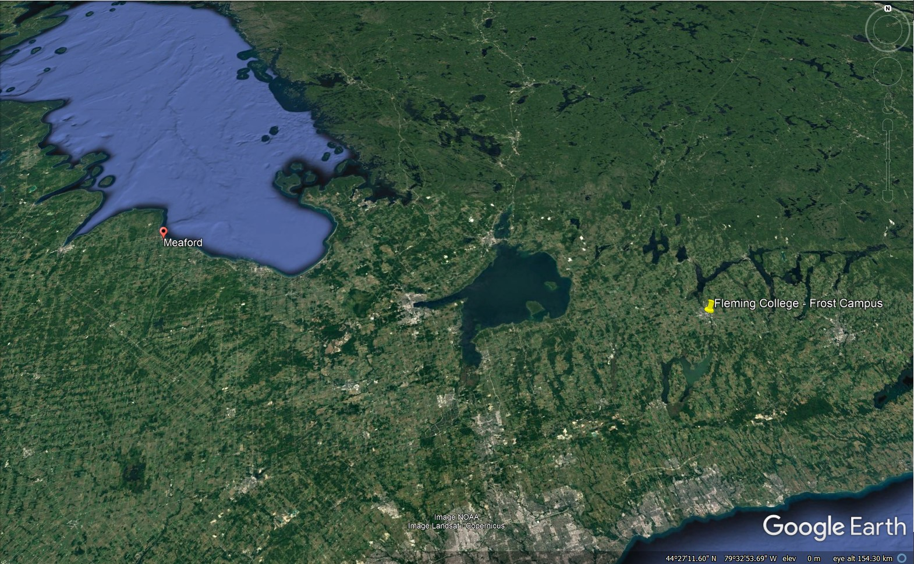
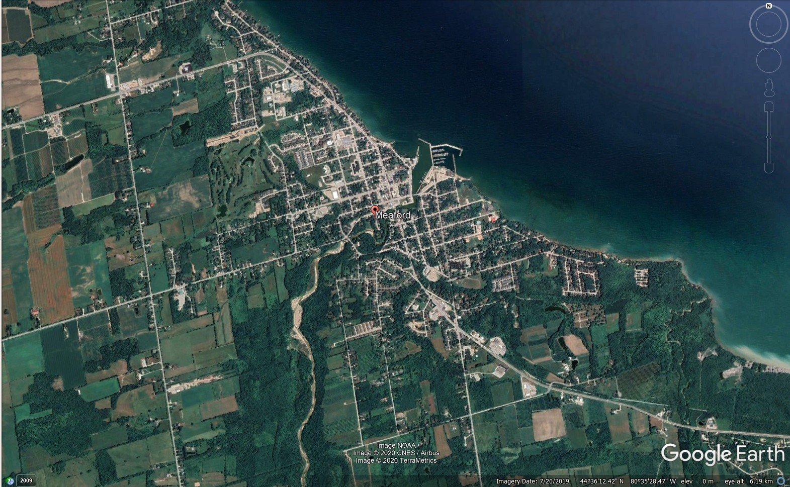

Most people call me Nick. On paper it tends to be Nicholas. Either works!
I'm a recent graduate of McMaster University (Class of 2020). My academic background is fairly eclectic; my major was a combined Geography & Environmental Science, and I obtained enough Psychology courses to obtain a minor.
I decided to enroll in the Geographic Information Systems Cartographic Specialist program at Fleming College in an effort to strengthen my technical skills, and to couple these technical skills with the more theoretical background that I obtained at university.
Over the last 8 years across high school and university, I've worked at a number of jobs: I've been a lift operator, general labourer, office assistant, research assistant, and I've worked at a bakery.
I'm from a small harbourfront community in Grey County, Ontario called Meaford. The joke of the town is that the population has remained relatively steady for the past 30 years at about 4,500 for the town (nearly 11,000 for the municipality). The town is within a half hour's drive from the communities of Owen Sound, Collingwood, and the popular Blue Mountain ski resort (I'm not much of a skiier).
During most of my time at university, I lived in the Westdale neighbourhood of Hamilton, Ontario.  
I'm a bit of a music geek. I play a couple instruments (mostly guitar and piano these days), and I played the cello in elementary and high school. I've tried out a few other instruments as well. I'm also a very avid music listener (I've been told that my spotify playlists are perhaps a little too prolific). I also see a lot of value in listening the radio, especially the CBC.
My first memory was getting an ant bite (not fun)
I'm left-handed.
I know how to drive a manual transmission (and mark my words, my first car will be one!)
I've been baking a few bread recipes using a breadmaker since I was about 10 years old.
I've loved reading maps since my age was in the single digits. I feel as though this was inspired by long drives to the Leamington area to visit my grandparents when I was young. My first favourite map was the Ontario general reference (road) map by MapArt Publishing; I loved its colourful design. During visits to Chapters/Indigo, I've been known to frequent the atlases section.
I applied to Fleming in December 2019 with plans to graduate from McMaster the following year. When the pandemic hit, my studies were shifted online and I moved back home. I had a very quiet (isolated) summer, but I was much looking forward to learning online in the fall while knowing that the pandemic wasn't going to hinder my education plans in any way.
I became much more accustomed to listening to talk radio regularly during the covid-19 pandemic. It wasn't until this summer that it obtained some real estate on my radio presets.
I spent a lot of time biking this summer - I clocked over 1,000 km
I discovered TONS of music in just a few months, and I'm really glad I did!
And like everybody else, I baked bread and couldn't find much yeast.